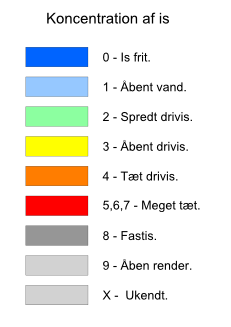

<!DOCTYPE html>
<html>
<head>
    <title>IS Observationer i Danmark</title>
    <meta charset="utf-8" />
    <meta name="viewport"
	    content="width=device-width, initial-scale=1.0, maximum-scale=1.0, user-scalable=no" />
    <link rel="stylesheet" href="bower_components/Leaflet/dist/leaflet.css" />
    <link rel="stylesheet" href="bower_components/jquery-ui/themes/smoothness/jquery-ui.min.css" />
    <link rel="stylesheet" href="leaflet-layer-ice-mst.css" />
    <script src="bower_components/jquery/dist/jquery.min.js"></script>
    <script src="bower_components/jquery-ui/jquery-ui.min.js"></script>
    <script src="bower_components/jquery-plugin-query-object/jquery.query-object.js"></script>
    <script src="bower_components/moment/min/moment-with-locales.min.js"></script>
    <script src="bower_components/Leaflet/dist/leaflet.js"></script>
    <script src="bower_components/leaflet-plugins/control/Permalink.js"></script>
    <script src="bower_components/leaflet-plugins/control/Permalink.Marker.js"></script>
    <script src="bower_components/leaflet-plugins/control/Permalink.Layer.js"></script>
    <script src="bower_components/jquery.ui.datepicker-da/index.js"></script>
    <script src="leaflet-layer-ice-mst.js"></script>
    <style>
    body {
	    padding: 0;
	    margin: 0;
    }
    html, body, #map {
	    height: 100%;
	    width: 100%;
    }
    </style>
</head>
<body>
	<div id="map"></div>
	<script type="text/javascript">
		var params = {};
		window.location.href.replace(/[?&]+([^=&]+)=([^&]*)/gi, function(m, key, value) {
		    params[key] = value;
		});
		console.log( params );

		var iceObservationData = null;
		var selectedDate = '';

		var availableDates = "";
		
		// Description of ice observation codes
		var aCodeDesc = null;
		var tCodeDesc = null;
		var kCodeDesc = null;
		var sCodeDesc = null;
		
		var CodeDesc = null;

		
		dateParameter = new Date();

		if( params.hasOwnProperty("date") )  {
		    dateParts = params["date"].split("-");
		    dateParameter = new Date(dateParts[0],dateParts[1],dateParts[2]);
		}
		

		$(function() {
			$.ajax({
				url : "https://api.fcoo.dk/sokice2/sokice/getIceObservationDates",
				type : 'get',
				dataType : 'json',
				async : false,
				cache : true,
				success : function(data) {
					availableDates = data;
				},
				error : function(request, status, error) {
					selectedDate = '';
					availableDates = '';
				}
			});
			
			$.ajax({
				url : "https://api.fcoo.dk/sokice2/sokice/getACode",
				type : 'get',
				dataType : 'json',
				async : true,
				cache : true,
				success : function(data) {
					aCodeDesc  = data;
				},
				error : function(request, status, error) {
					aCodeDesc = null;
				}
			});
			
			$.ajax({
				url : "https://api.fcoo.dk/sokice2/sokice/getKCode",
				type : 'get',
				dataType : 'json',
				async : true,
				cache : true,
				success : function(data) {
					kCodeDesc  = data;
				},
				error : function(request, status, error) {
					kCodeDesc = null;
				}
			});
			
			$.ajax({
				url : "https://api.fcoo.dk/sokice2/sokice/getTCode",
				type : 'get',
				dataType : 'json',
				async : true,
				cache : true,
				success : function(data) {
					tCodeDesc  = data;
				},
				error : function(request, status, error) {
					tCodeDesc = null;
				}
			});
			
			$.ajax({
				url : "https://api.fcoo.dk/sokice2/sokice/getSCode",
				type : 'get',
				dataType : 'json',
				async : true,
				cache : true,
				success : function(data) {
					sCodeDesc  = data;
				},
				error : function(request, status, error) {
					sCodeDesc = null;
				}
			});
			
			$.ajax({
				url : "https://api.fcoo.dk/sokice2/sokice/getCodeDesc",
				type : 'get',
				dataType : 'json',
				async : true,
				cache : true,
				success : function(data) {
					CodeDesc  = data;
				},
				error : function(request, status, error) {
					CodeDesc = null;
				}
			});

			$("#datepicker").datepicker({
				buttonImage : "/datepicker/calendar.gif",
				maxDate : "+0" ,
				beforeShowDay : available,
				minDate : new Date(2013, 1 - 1, 1)
			});

			// Set the format so it match the rest service.
			$("#datepicker").datepicker("option", "dateFormat", "yy\/mm\/dd");
		        				
			$("#datepicker")
					.change(
							function() {
								$
										.ajax({
											url : "https://api.fcoo.dk/sokice2/sokice/getIceReportDate/"
													+ $("#datepicker").val(),
											type : 'get',
											dataType : 'json',
											async : true,
											cache : true,
											success : function(data) {
												geojson.clearLayers();
												iceObservationData = data;
												geojson
														.addData(iceObservationData);
												numberOfObservations = 2;
												
												// var obj = jQuery.parseJSON( iceObservationData );
												numberOfObservations = data.features.length;
												selectedDate = ' - '
														+ $("#datepicker")
																.val()
														+ " -  Antal observationer : "
														+ numberOfObservations;
												selectedDate = selectedDate
														+ '<br/><a href="./sokice" target="_blank"></a>';
												info.update(null);
											},
											error : function(request, status,
													error) {
												geojson.clearLayers();
												geojson
														.addData(iceObservationData);
												selectedDate = '';
		
											}
										});
								//alert( "Handler for .change() called."   );
							});

		$( "#datepicker" ).datepicker( "setDate", dateParameter );
		$("#datepicker").change();
		
		})


		
		var map = L.map('map').setView([ 56, 11 ], 7);

		// 
		// TileLayer('https://{s}.tile.openstreetmap.org/{z}/{x}/{y}.png', {
		//https://{s}.tiles.mapbox.com/v3/{id}/{z}/{x}/{y}.png
		var osm = L
				.tileLayer(
						'https://{s}.tile.openstreetmap.org/{z}/{x}/{y}.png',
						{
							maxZoom : 18,
							attribution : 'Map data &copy; <a href="http://openstreetmap.org">OpenStreetMap</a> contributors, '
									+ '<a href="http://creativecommons.org/licenses/by-sa/2.0/">CC-BY-SA</a>, '
									+ 'Imagery � <a href="http://mapbox.com">Mapbox</a>'
						/*id: 'examples.map-20v6611k' */
						//id: 'examples.map-i875mjb7'
						}).addTo(map);

		map.addControl(new L.Control.Permalink({text: 'Permalink'}));

		
		// Info box - displays infomation about selected area and current observation time.
		var info = L.control({
			position : 'topright'
		});

		info.onAdd = function(map) {
			this._div = L.DomUtil.create('div', 'info');
			this.update();
			return this._div;
		};

		info.update = function(props) {
			props ? timestamp = moment.unix(props.observationtime) : moment
					.unix(0)
			this._div.innerHTML = '<h4>Dato : '
					+ selectedDate
					+ '</h4>'
					+ (props ? '<b>' + props.areaname + '</b><br/>'
							+ props.icecode + '<br/>Observeret : '
							+ timestamp.format("YYYY-MM-DD - HH:mm:ss")
							: 'V&aelig;lg dato - kun datoer med observationer kan v&aelig;lges.<br/>Flyt mus til omr&aring;de for yderlig information <br/>Klik p&aring; omr&aring;de for komplet information');
		};


		
		


		info.addTo(map);

		var datepicker = L.control({
			position : 'topright'
		});
		datepicker.onAdd = function(map) {
			var div = L.DomUtil.create('div', 'datepicker');
			div.innerHTML = "<div id=\"datepicker\"></div>";
			return div;
		};

		

		var ColourLegend = L.control({
			position : 'bottomleft'
		});

		ColourLegend.onAdd = function(map) {
			var div = L.DomUtil.create('div', 'colourlegend');
			div.innerHTML = '';

			return div;
		};

		//legend.addTo(map);
		ColourLegend.addTo(map);
		datepicker.addTo(map);


		function getOpacity(d) {
			return d == '0' ? '0.6' : d == '1' ? '0.6' : d == '2' ? '0.6'
					: d == '3' ? '0.6' : d == '4' ? '0.6' : d == '5' ? '0.6'
							: d == '6' ? '0.6' : d == '7' ? '0.6'
									: d == '8' ? '0.6' : d == '9' ? '0.6'
											: d == 'x' ? '1.0' : '0';
		}

		function style(feature) {
			return {
				weight : 2,
				opacity : 1,
				color : 'grey',
				dashArray : '2',
				fillOpacity : getOpacity(feature.properties.acode),
				fillColor : feature.properties.colourcode
			};
		}

		function highlightFeature(e) {
			var layer = e.target;

			layer.setStyle({
				weight : 5,
				color : '#666',
				dashArray : '',
				fillOpacity : 0.7
			});

			if (!L.Browser.ie && !L.Browser.opera) {
				layer.bringToFront();
			}

			info.update(layer.feature.properties);
		}

		var geojson;

		function resetHighlight(e) {
			geojson.resetStyle(e.target);
			info.update();
		}

		function onEachFeature(feature, layer) {
			timestamp = moment.unix(feature.properties.observationtime) 
	
			var sPopTable =
				// format for third+ rows: Attribute, Value, Meaning 
				"<b>" + feature.properties.areaname + "</b><br/>"
				+ "<b>Observaret : "  	 + timestamp.format("YYYY-MM-DD - HH:mm:ss") + "</b><br/>"
				+ "<table border='2' style='width:100%'>"
						+ "<col align='right'><col align='center'><col align='left'>"
						+ "<tr><th>ISKode</th><th>Vaerdi</th><th>Betydning</th></tr>"
						+ "<tr><td>"
						+ CodeDesc["A"]
						+ "</td><td>"
						+ feature.properties.acode
						+ "</td><td>"
						+ aCodeDesc[feature.properties.acode]
						+ "</td></tr>"
						+ "<tr><td>"
						+ CodeDesc["S"]
						+ "</td><td>"
						+ feature.properties.scode
						+ "</td><td>"
						+ sCodeDesc[feature.properties.scode]
						+ "</td></tr>"
						+ "<tr><td>"
						+ CodeDesc["T"]
						+ "</td><td>"
						+ feature.properties.tcode
						+ "</td><td>"
						+ tCodeDesc[feature.properties.tcode]
						+ "</td></tr>"
						+ "<tr><td>"
						+ CodeDesc["K"]
						+ "</td><td>"
						+ feature.properties.kcode
						+ "</td><td>"
						+ kCodeDesc[feature.properties.kcode]
						+ "</td></tr>" + "</table>";	
		
			layer.on({
				mouseover : highlightFeature,
				mouseout : resetHighlight
			});
			
			layer.bindPopup(sPopTable );
		}
		
		geojson = L.geoJson(iceObservationData, {
			style : style,
			onEachFeature : onEachFeature
		}).addTo(map);

		map.attributionControl
				.addAttribution('IS Observationer &copy; <a href="http://www.fcoo.dk/">www.fcoo.dk</a>');

		// Check if there is an iceobservation on the given date.
		function available(date) {
			dmy = date.getDate() + "-" + (date.getMonth() + 1) + "-"
					+ date.getFullYear();
			if ($.inArray(dmy, availableDates) != -1) {
				return [ true, "", "Observationer" ];
			} else {
				return [ false, "", "Ingen observationer" ];
			}
		}
		
		// Zoom to the feature
		function zoomToFeature(e) {
			map.fitBounds(e.target.getBounds());
		}
	</script>
</body>
</html>
